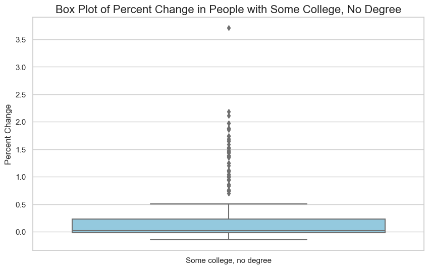
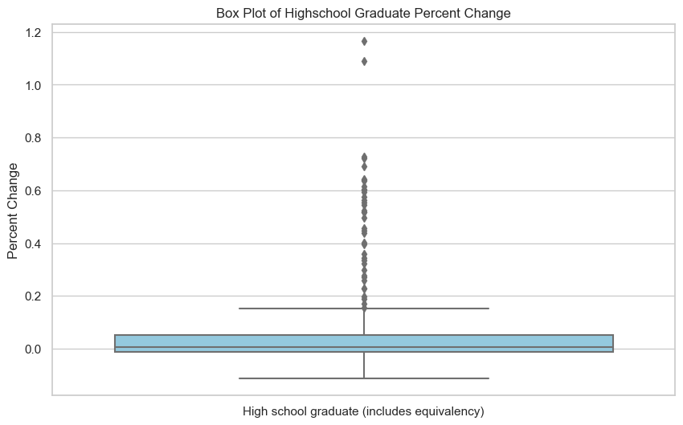

Now I will attempt to get a better understanding of my record data through exploratory data analysis. By calculating and reporting basic summary statistics, I will know the central tendency, spread, and extremes of my variables. This can reveal flaws or inaccuracies in the data and provide us with insight into the distribution of the data. I will also create some data visualizations. There is a plethora of graphs I can make with all the variables I have. Since I already know what algorithms I will be using and what I want to achieve with my models, I will just create a few to show some general relationships and inspire other rabbit holes I could go down if I choose. Like I said before, some of my variables are closely related and correlated, so now we will finally visualize these correlations. Lastly, I will examine the outliers I have and decide what actions I should take with the outliers.
Descriptive Statistics
Code
import seaborn as snsimport matplotlib.pyplot as pltimport pandas as pdfrom scipy import statsdf = pd.read_csv('./data/RecordData.csv')df.head()
Year
Total households
Married couple households
Married couple with children of the householder under 18 years
Male householder,no spouse/partner present with children of the householder under 18 years
Female householder, no spouse/partner present with children of the householder under 18 years
Number of women 15 to 50 years old who had a birth in the past 12 months
Married couple with children of the householder under 18 years
Male householder,no spouse/partner present with children of the householder under 18 years
Female householder, no spouse/partner present with children of the householder under 18 years
Number of women 15 to 50 years old who had a birth in the past 12 months
Less than 9th grade
9th to 12th grade,no diploma
High school graduate (includes equivalency)
Some college, no degree
Associates degree
Bachelors degree
Number of people employed
Number of people unemployed
Median Household Income
Mean Household Income
Median earnings for male full-time, year-round workers
Median earnings for female full-time, year-round workers
Occupied Housing Units
Total Housing Units
Median Rooms
Renter Occupied Housing Units
Mean Rent Paid
Total population
Sex ratio (males per 100 females)
Median Age
Race-White
Race-Black
Race-American Indian and Alaska Native
Race-Asian
Hispanic or Latino
RegionName
Typical Home Value
count
204.000000
204.000000
204.000000
204.000000
204.000000
204.000000
204.000000
204.000000
204.000000
204.000000
204.000000
204.000000
204.000000
204.000000
204.000000
204.000000
204.000000
204.000000
204.000000
204.000000
204.000000
204.000000
204.000000
204.000000
204.000000
204.000000
204.000000
204.000000
204.000000
204.000000
204.000000
204.000000
204
204.000000
unique
NaN
NaN
NaN
NaN
NaN
NaN
NaN
NaN
NaN
NaN
NaN
NaN
NaN
NaN
NaN
NaN
NaN
NaN
NaN
NaN
NaN
NaN
NaN
NaN
NaN
NaN
NaN
NaN
NaN
NaN
NaN
NaN
51
NaN
top
NaN
NaN
NaN
NaN
NaN
NaN
NaN
NaN
NaN
NaN
NaN
NaN
NaN
NaN
NaN
NaN
NaN
NaN
NaN
NaN
NaN
NaN
NaN
NaN
NaN
NaN
NaN
NaN
NaN
NaN
NaN
NaN
Alabama
NaN
freq
NaN
NaN
NaN
NaN
NaN
NaN
NaN
NaN
NaN
NaN
NaN
NaN
NaN
NaN
NaN
NaN
NaN
NaN
NaN
NaN
NaN
NaN
NaN
NaN
NaN
NaN
NaN
NaN
NaN
NaN
NaN
NaN
4
NaN
mean
2020.000000
0.020044
-0.050633
-0.069625
-0.089833
-0.206925
0.524127
-0.109497
-0.220982
0.093385
0.349233
-0.113733
0.205185
0.012061
-0.022911
0.054935
0.056360
0.049179
0.053833
0.020044
0.010245
0.003344
0.008161
0.056447
0.006469
0.002941
0.005769
-0.021826
0.001579
0.059462
0.019590
0.019030
NaN
0.110084
std
1.585028
0.017131
0.120031
0.157685
0.232427
0.365501
0.945060
0.198461
0.329615
0.215643
0.653535
0.248473
0.332987
0.023825
0.253585
0.029235
0.025530
0.039958
0.044326
0.017131
0.012175
0.012598
0.030682
0.033730
0.010885
0.007600
0.005859
0.059540
0.112276
0.268675
0.078313
0.110523
NaN
0.099373
min
2018.000000
-0.009240
-0.355454
-0.490505
-0.554143
-0.888434
-0.346730
-0.656774
-0.870279
-0.112117
-0.144863
-0.869612
-0.246902
-0.083615
-0.522982
-0.023606
-0.019416
-0.050021
-0.069051
-0.009240
-0.040806
-0.050000
-0.073401
-0.019983
-0.050583
-0.020735
-0.010390
-0.383837
-0.387319
-0.578552
-0.274559
-0.476645
NaN
-0.016960
25%
2018.750000
0.009339
-0.065194
-0.128874
-0.290981
-0.361259
-0.017399
-0.161193
-0.355393
-0.013111
-0.016380
-0.142606
0.023646
-0.001067
-0.169444
0.034074
0.038350
0.019872
0.024355
0.009339
0.004823
0.000000
-0.009801
0.031688
-0.000028
-0.001061
0.002532
-0.017285
-0.032278
-0.078743
-0.013964
0.000514
NaN
0.049067
50%
2020.000000
0.016837
0.004610
-0.002334
-0.026105
-0.022791
0.063992
-0.047421
-0.056749
0.005985
0.014486
0.010017
0.051750
0.010269
-0.067010
0.054701
0.051641
0.043743
0.047357
0.016837
0.007647
0.000000
0.007864
0.052233
0.004786
0.002001
0.005263
-0.001994
0.004109
0.025383
0.017288
0.025703
NaN
0.066658
75%
2021.250000
0.025940
0.021921
0.030698
0.047844
0.020779
0.951449
0.011528
-0.004048
0.052998
0.231572
0.035628
0.153283
0.025831
0.052464
0.070556
0.071981
0.073978
0.077146
0.025940
0.013986
0.016737
0.025262
0.078260
0.012023
0.007316
0.008433
0.004153
0.026074
0.104096
0.049673
0.045049
NaN
0.135000
max
2022.000000
0.096015
0.083260
0.210279
0.571831
0.310981
4.711793
0.583672
0.233134
1.166320
3.713579
0.200963
1.860038
0.081599
0.985574
0.155899
0.139031
0.187938
0.199230
0.096015
0.107393
0.039216
0.130424
0.176136
0.063712
0.024341
0.026667
0.042915
0.940551
1.598558
0.394246
0.716742
NaN
0.576048
Some of the more niche variables, Number of women 15 to 50 years old who had a birth in the past 12 months, seem to be suspect as they have some very high maxes and standard deviation. We may just remove these columns completely later.
Code
pd.reset_option('all')
Visualizations
I’ll start by just choosing a variable and state to compare against the target variable to find some relationships.
Code
Alabama_data = df[df['RegionName'] =='Alabama']plt.figure(figsize=(10, 6))plt.plot(Alabama_data['Year'], Alabama_data['Typical Home Value'], label='Typical Home Value', marker='o', linestyle='-', color='blue', linewidth=2)plt.plot(Alabama_data['Year'], Alabama_data['Number of people employed'], label='Num People Employed', marker='s', linestyle='-', color='green', linewidth=2)plt.title("Percent Change of Typical Home Value and Number of People Employed in Alabama", fontsize=16)plt.xlabel("Year", fontsize=12)plt.ylabel("Percent Change", fontsize=12)plt.legend()plt.grid(True, linestyle='--', alpha=0.7)plt.show()
These two variables almost seem to be negatively correlated. This is the opposite of what I expected as I usually equate more people employed to a stronger economy and higher home prices. Let us see these two relationships in some other states.
Code
NewYork_data = df[df['RegionName'] =='New York']plt.figure(figsize=(10, 6))plt.plot(NewYork_data['Year'], NewYork_data['Typical Home Value'], label='Typical Home Value', marker='o', linestyle='-', color='blue', linewidth=2)plt.plot(NewYork_data['Year'], NewYork_data['Number of people employed'], label='Num People Employed', marker='s', linestyle='-', color='green', linewidth=2)plt.title("Percent Change of Typical Home Value and Number of People Employed in New York", fontsize=16)plt.xlabel("Year", fontsize=12)plt.ylabel("Percent Change", fontsize=12)plt.legend()plt.grid(True, linestyle='--', alpha=0.7)plt.show()
We see the same trends in New York as well.
Code
Michigan_data = df[df['RegionName'] =='Michigan']plt.figure(figsize=(10, 6))plt.plot(Michigan_data['Year'], Michigan_data['Typical Home Value'], label='Typical Home Value', marker='o', linestyle='-', color='blue', linewidth=2)plt.plot(Michigan_data['Year'], Michigan_data['Number of people employed'], label='Num People Employed', marker='s', linestyle='-', color='green', linewidth=2)plt.title("Percent Change of Typical Home Value and Number of People Employed in Michigan", fontsize=16)plt.xlabel("Year", fontsize=12)plt.ylabel("Percent Change", fontsize=12)plt.legend()plt.grid(True, linestyle='--', alpha=0.7)plt.show()
Again we see it here. This is why EDA is crucial if you would like to uncover hidden truths about the data. Although we would guess employment and home value were positively correlated, this is not the case here. This may be due to COVID turning the world on its head as many unprecedented changes happened during that time. This could be detrimental since I want to predict home values under normal conditions.
Now I will make some box plots of some variables with potentially problematic values, prepping for the next section.
Code
plt.figure(figsize=(10, 6))sns.boxplot(data=df[['Some college, no degree']], color='skyblue')plt.title('Box Plot of Percent Change in People with Some College, No Degree', fontsize=16)plt.ylabel('Percent Change', fontsize=12)plt.show()

Code
sns.set(style='whitegrid')plt.figure(figsize=(10, 6))sns.boxplot(data=df[['High school graduate (includes equivalency)']], color='skyblue')plt.title('Box Plot of Percent Change in High School Graduates (includes equivalency)', fontsize=16)plt.ylabel('Percent Change', fontsize=12)plt.show()
Code
sns.set(style='whitegrid')plt.figure(figsize=(10, 6))sns.boxplot(data=df[['Number of women 15 to 50 years old who had a birth in the past 12 months']], color='skyblue')plt.title('Box Plot of Percent Change in Number of Women 15 to 50 years Old Who Had a Birth in the Past 12 months', fontsize=16)plt.ylabel('Percent Change', fontsize=12)plt.show()
Code
plt.figure(figsize=(10, 6))sns.boxplot(data=df[['High school graduate (includes equivalency)']], color='skyblue')plt.title('Box Plot of Highschool Graduate Percent Change')plt.ylabel('Percent Change')plt.show()

Code
plt.figure(figsize=(10, 6))sns.boxplot(data=df[['Typical Home Value']], color='skyblue')plt.title('TBox Plot of ypical Home Value Percent Change')plt.ylabel('Percent Change')plt.show()
As you can see, a reoccurring theme with these box plots are the many outliers, even with my target variable, especially a few data points that deviate very far from the median. I do not want to get rid of most of the outliers because I think they still have value, but the problematic points need to be removed so my analysis is not negatively affected.
Outliers
Here I will make a data frame that detects outliers in each column that have a Z-score greater than 3.5 and outputs the row to find some problematic data points.
Married couple with children of the householder under 18 years
Male householder,no spouse/partner present with children of the householder under 18 years
Female householder, no spouse/partner present with children of the householder under 18 years
Number of women 15 to 50 years old who had a birth in the past 12 months
Less than 9th grade
9th to 12th grade,no diploma
High school graduate (includes equivalency)
...
Total population
Sex ratio (males per 100 females)
Median Age
Race-White
Race-Black
Race-American Indian and Alaska Native
Race-Asian
Hispanic or Latino
RegionName
Typical Home Value
10
2021
0.055153
0.056519
0.063510
-0.009826
0.015737
-0.060886
-0.074551
-0.124297
-0.002245
...
-0.000330
0.005051
0.007833
-0.256084
-0.049722
-0.113205
0.014744
0.017542
Arizona
0.465593
18
2021
0.020610
0.004144
-0.013885
0.047402
0.002291
0.016327
0.014671
-0.077256
0.005821
...
-0.006944
0.012146
0.016216
-0.342397
-0.052871
0.667543
0.017400
0.011539
California
0.263897
34
2021
0.083419
0.083260
0.110537
0.092350
0.068272
0.025547
-0.030368
-0.152002
-0.007428
...
0.014126
0.012552
0.009434
-0.237309
-0.045173
0.066859
0.034113
0.029537
Florida
0.326356
42
2021
0.053258
0.069152
0.116342
0.055582
-0.143698
0.002767
-0.064805
-0.035668
-0.015822
...
0.018138
0.013000
0.015152
-0.063111
0.057980
-0.210801
-0.021324
0.061446
Hawaii
0.216170
43
2022
0.009686
-0.029597
-0.055693
0.103088
0.310981
-0.138189
-0.045804
0.054461
0.017893
...
-0.000941
0.001974
0.014925
-0.001749
-0.086856
-0.152367
-0.054849
-0.476645
Hawaii
0.119270
45
2019
0.024348
-0.183459
-0.220651
-0.411395
-0.851894
4.711793
-0.446483
-0.795935
0.045187
...
0.018730
-0.001976
0.002717
0.012729
0.052422
-0.006905
-0.039110
0.031601
Idaho
0.108631
46
2021
0.057974
0.079034
0.073181
0.571831
-0.045821
-0.150307
0.138723
0.079400
0.108126
...
0.063712
-0.001980
0.010840
-0.030580
0.120161
0.049110
0.001232
0.097702
Idaho
0.576048
50
2021
0.025819
0.021762
0.029648
0.059900
-0.051231
0.006543
0.027617
-0.071533
-0.026874
...
-0.000028
0.015576
0.010363
-0.140766
-0.037765
1.598558
0.014678
0.027537
Illinois
0.168975
72
2018
0.054252
0.037673
0.050175
-0.070806
0.065664
-0.024363
-0.124215
0.028409
0.086337
...
0.001869
0.000000
0.011211
-0.000125
0.157708
-0.082869
0.034703
0.023380
Maine
0.064244
75
2022
0.019730
0.015848
-0.026318
0.199123
-0.149499
0.034946
-0.098515
0.041105
0.033876
...
0.009541
0.013485
0.008949
0.013462
0.049219
0.474843
-0.032864
0.716742
Maine
0.106837
101
2019
0.014441
-0.195616
-0.357689
-0.411364
-0.874712
2.332518
-0.618755
-0.851116
0.170165
...
0.006093
-0.003945
0.009975
-0.001078
0.540150
-0.006028
0.048139
-0.030693
Montana
0.056170
103
2022
0.033685
0.019739
0.064245
0.001460
0.205620
0.375366
0.583672
-0.088329
0.058703
...
0.016840
-0.010659
0.002494
0.017740
-0.357706
-0.056952
-0.228635
0.032370
Montana
0.098459
110
2021
0.041820
0.031044
0.055005
0.048530
0.030733
-0.005101
0.174745
-0.107987
0.006687
...
0.020725
0.010934
0.007813
-0.215727
-0.027236
0.052680
0.033282
0.044593
Nevada
0.312454
122
2021
0.051154
0.079736
0.070533
0.149218
-0.072579
-0.124290
-0.103086
-0.094506
-0.010343
...
0.009084
0.011247
0.012953
-0.383837
-0.114053
-0.011588
-0.049523
0.025448
New Mexico
0.279211
126
2021
0.027643
0.014309
-0.005062
0.004763
-0.047201
-0.018414
0.034458
-0.053481
-0.032565
...
0.019655
0.011640
0.015306
-0.103374
-0.088169
0.627134
0.028334
0.030694
New York
0.182680
133
2019
0.013039
-0.191167
-0.231652
-0.397627
-0.884407
3.664530
-0.382714
-0.847600
0.228239
...
0.002612
-0.020735
0.002825
0.003411
-0.140562
-0.007269
-0.224016
0.110844
North Dakota
0.036121
149
2019
0.009528
-0.266410
-0.349068
-0.442714
-0.835774
1.914363
-0.486150
-0.827213
1.166320
...
-0.000396
0.001042
0.000000
-0.006074
0.018445
0.264731
-0.003000
0.023664
Pennsylvania
0.054333
154
2021
0.081037
0.083137
0.080883
-0.363321
0.022460
0.458082
-0.023583
0.110515
0.010123
...
0.034218
0.006289
0.012469
-0.069564
-0.303738
-0.013170
-0.079701
0.087661
Rhode Island
0.261654
160
2018
0.003454
0.029545
0.017244
-0.000755
-0.071035
0.034423
-0.063419
0.021516
-0.081849
...
0.014453
0.001967
0.008130
0.005823
0.121858
0.026157
0.394246
0.086483
South Dakota
0.042984
170
2021
0.081233
0.078094
0.081198
0.062968
0.020952
0.111101
0.016162
-0.066879
-0.002312
...
0.018350
0.012183
0.011396
-0.335800
-0.008021
0.571214
0.072469
0.028855
Texas
0.269736
173
2019
0.024992
-0.167414
-0.191234
-0.336425
-0.789190
4.233353
-0.506266
-0.796194
-0.043176
...
0.014189
-0.004926
0.006452
0.033724
-0.085396
0.019897
0.007536
0.026285
Utah
0.069457
177
2019
0.005333
-0.223165
-0.330161
-0.269993
-0.876571
2.478238
-0.535917
-0.832822
0.639239
...
-0.003688
0.014463
-0.006961
-0.007161
0.238027
0.679862
-0.274559
-0.003373
Vermont
0.031649
178
2021
0.028147
0.080267
0.105794
-0.243446
-0.071089
-0.122692
-0.188336
-0.179850
-0.062629
...
0.034586
0.003055
0.002336
0.005170
-0.245363
-0.578552
0.318726
0.064313
Vermont
0.263214
179
2022
0.025640
0.003709
-0.015261
0.395730
-0.194364
0.201600
-0.007340
-0.097474
0.005142
...
0.002314
-0.002030
0.006993
-0.000163
-0.112360
0.050243
0.032261
0.631380
Vermont
0.091870
189
2019
-0.008885
-0.236678
-0.335715
-0.388981
-0.871107
1.649110
-0.494669
-0.781250
1.090989
...
-0.007578
-0.005092
0.002336
-0.007006
-0.040100
0.369722
0.063303
0.049044
West Virginia
0.015365
190
2021
-0.008204
-0.019896
-0.027457
-0.184190
0.148089
-0.145993
-0.234619
-0.096763
-0.039035
...
-0.005127
0.014330
-0.002331
-0.030346
-0.229882
-0.367676
-0.014325
0.131492
West Virginia
0.202372
191
2022
0.019579
-0.020436
0.013439
0.550396
-0.059651
0.075458
0.055790
-0.065771
-0.022501
...
-0.004376
-0.003027
0.002336
-0.008671
0.197499
0.241107
-0.047427
0.474959
West Virginia
0.079937
196
2018
0.019735
-0.008194
-0.073422
-0.121206
0.043319
0.431683
-0.029365
-0.012097
0.057379
...
-0.002724
-0.016299
0.026667
0.000074
-0.364031
0.160714
0.201780
-0.003906
Wyoming
0.023767
197
2019
0.012491
-0.145165
-0.230388
-0.224044
-0.888434
1.387621
-0.656774
-0.870279
0.131951
...
0.001769
0.020468
-0.010390
-0.004907
0.940551
-0.148965
-0.202170
0.012298
Wyoming
0.063963
201
2019
0.014241
-0.355454
-0.490505
-0.365204
-0.869834
0.977101
-0.287304
-0.701942
0.298245
...
0.004689
-0.008811
0.011799
0.011158
0.002899
-0.023810
0.042995
0.002877
District of Columbia
0.017659
202
2021
0.096015
-0.010890
0.155305
-0.343210
0.020759
-0.059821
-0.015675
-0.257760
-0.112117
...
-0.050583
0.010000
0.014577
-0.154024
-0.097916
-0.320785
-0.035861
-0.032185
District of Columbia
0.097177
203
2022
0.023172
0.000929
-0.045818
-0.211063
-0.092319
0.055245
-0.370224
0.098800
-0.089982
...
0.002616
-0.001100
0.002874
0.016235
-0.023242
1.443404
0.009714
-0.084908
District of Columbia
-0.009417
32 rows × 34 columns
Considering how little data I have, this is a lot of rows to drop. I will keep them for now and possibly for the rest of my analysis. If I repeat this with more data I will be sure to drop the outliers.
Correlation
Code
df2.corr()
Total households
Married couple households
Married couple with children of the householder under 18 years
Male householder,no spouse/partner present with children of the householder under 18 years
Female householder, no spouse/partner present with children of the householder under 18 years
Number of women 15 to 50 years old who had a birth in the past 12 months
Less than 9th grade
9th to 12th grade,no diploma
High school graduate (includes equivalency)
Some college, no degree
...
Mean Rent Paid
Total population
Sex ratio (males per 100 females)
Median Age
Race-White
Race-Black
Race-American Indian and Alaska Native
Race-Asian
Hispanic or Latino
Typical Home Value
Total households
1.000000
0.438800
0.465624
0.248086
0.336708
-0.260457
0.312382
0.287555
-0.294137
-0.318927
...
0.421822
0.390172
0.331799
0.277745
-0.536511
-0.153728
0.009718
0.049971
0.088902
0.578869
Married couple households
0.438800
1.000000
0.981878
0.790430
0.945954
-0.831271
0.757746
0.931202
-0.766019
-0.920144
...
0.497780
0.276947
0.331144
0.021856
-0.274077
-0.166218
0.019215
0.078385
0.021463
0.444488
Married couple with children of the householder under 18 years
0.465624
0.981878
1.000000
0.771685
0.943687
-0.815491
0.781559
0.917415
-0.774410
-0.906359
...
0.499087
0.241894
0.325107
0.017160
-0.278718
-0.198401
-0.003718
0.081323
0.027813
0.447811
Male householder,no spouse/partner present with children of the householder under 18 years
0.248086
0.790430
0.771685
1.000000
0.797750
-0.742020
0.682252
0.800932
-0.621534
-0.745090
...
0.412152
0.194073
0.243893
0.024614
-0.212158
-0.045523
0.056621
0.111638
0.158003
0.364732
Female householder, no spouse/partner present with children of the householder under 18 years
0.336708
0.945954
0.943687
0.797750
1.000000
-0.894087
0.803087
0.972320
-0.749640
-0.896076
...
0.438733
0.151822
0.228283
0.085614
-0.219316
-0.214236
0.019388
0.115063
-0.051127
0.338099
Number of women 15 to 50 years old who had a birth in the past 12 months
-0.260457
-0.831271
-0.815491
-0.742020
-0.894087
1.000000
-0.711113
-0.893892
0.592598
0.785771
...
-0.411501
-0.118924
-0.275845
-0.072924
0.213962
0.149411
-0.005464
-0.171662
0.015633
-0.327840
Less than 9th grade
0.312382
0.757746
0.781559
0.682252
0.803087
-0.711113
1.000000
0.782436
-0.655789
-0.724942
...
0.460252
0.192067
0.237910
0.159691
-0.212471
-0.298075
0.009762
0.029356
-0.046078
0.297504
9th to 12th grade,no diploma
0.287555
0.931202
0.917415
0.800932
0.972320
-0.893892
0.782436
1.000000
-0.752483
-0.875352
...
0.424624
0.179373
0.191868
0.090643
-0.152399
-0.195105
0.055358
0.137906
-0.017625
0.290155
High school graduate (includes equivalency)
-0.294137
-0.766019
-0.774410
-0.621534
-0.749640
0.592598
-0.655789
-0.752483
1.000000
0.625286
...
-0.423344
-0.185994
-0.201587
-0.058643
0.172882
0.132303
0.004590
-0.111726
0.009065
-0.296042
Some college, no degree
-0.318927
-0.920144
-0.906359
-0.745090
-0.896076
0.785771
-0.724942
-0.875352
0.625286
1.000000
...
-0.410235
-0.127849
-0.290762
-0.002780
0.222860
0.165423
-0.042741
-0.026843
0.002079
-0.339538
Associates degree
0.317707
0.947215
0.930499
0.808561
0.954101
-0.873807
0.742061
0.942365
-0.734199
-0.921569
...
0.421006
0.202411
0.261304
0.052382
-0.213265
-0.163936
0.034185
0.103434
0.015772
0.368901
Bachelors degree
-0.212064
-0.779303
-0.778599
-0.715225
-0.855243
0.855915
-0.739918
-0.865743
0.584652
0.712947
...
-0.360112
-0.060273
-0.220864
-0.049123
0.183743
0.210422
-0.048662
-0.174529
0.027426
-0.245080
Number of people employed
-0.164870
-0.003424
-0.035541
0.058006
0.031240
0.019247
0.050115
0.095316
-0.012144
0.016294
...
0.180419
0.199823
-0.381214
-0.100719
0.501511
0.082050
0.009338
0.120333
-0.263606
-0.247353
Number of people unemployed
0.474298
0.179621
0.192406
0.019238
0.081436
-0.064336
0.111410
0.031265
-0.108437
-0.100239
...
0.128883
0.342345
0.444477
0.206341
-0.617429
-0.175998
0.068743
-0.036782
0.222112
0.549155
Median Household Income
-0.024458
-0.004581
-0.021028
-0.010217
-0.068167
0.019591
-0.012365
-0.070054
0.021158
0.063929
...
0.437673
0.252681
0.059726
-0.224007
0.052497
-0.076748
-0.040125
0.118803
-0.214884
0.242465
Mean Household Income
0.129516
0.169651
0.165921
0.104215
0.115443
-0.128515
0.078931
0.114442
-0.101892
-0.098668
...
0.542114
0.318451
0.082443
-0.122832
-0.061203
-0.164692
-0.135585
0.213101
-0.159560
0.450604
Median earnings for male full-time, year-round workers
0.521425
0.358641
0.380646
0.239736
0.267579
-0.248847
0.222373
0.209678
-0.291935
-0.254937
...
0.402790
0.242736
0.490989
0.080710
-0.520318
-0.167742
-0.061886
0.058246
0.141308
0.613716
Median earnings for female full-time, year-round workers